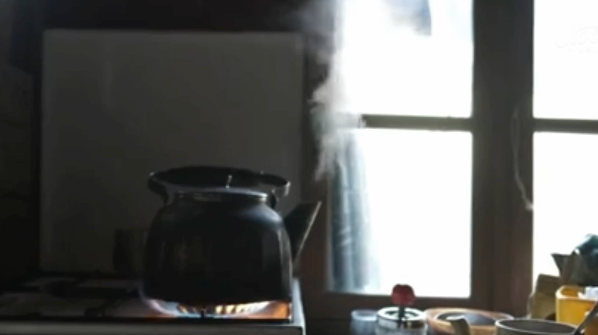
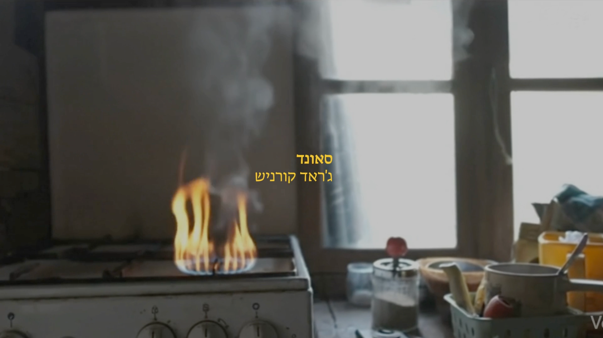

health cigarette

About
A title sequence for a fictional cinematic adaptation of Etgar Keret's short story, “Health Cigarette.” The project explores the complex relationship between a son haunted by post-traumatic memories and his mother, who is gradually losing her identity to Alzheimer's. The visual narrative highlights the tension between two opposing states of memory: a son trapped by a traumatic past he can never forget, and a mother losing her sense of self to a past she can no longer remember.
Concept - “The Erosion of Identity”
The visual language treats memory as a physical space that is gradually being emptied. Using nostalgic Israeli archival footage, I created AI-generated “doubles” to depict a domestic environment losing its character. As the narrative progresses, windows vanish from walls, stoves burn aimlessly, and familiar faces blur into anonymity. These visual glitches represent the mother’s mental decline.
Art direction
Inspired by the Israeli aesthetic of the 1970s, utilizing a muted color palette and vintage-inspired typography to ground the abstract concept of memory loss in a specific, nostalgic cultural context.



